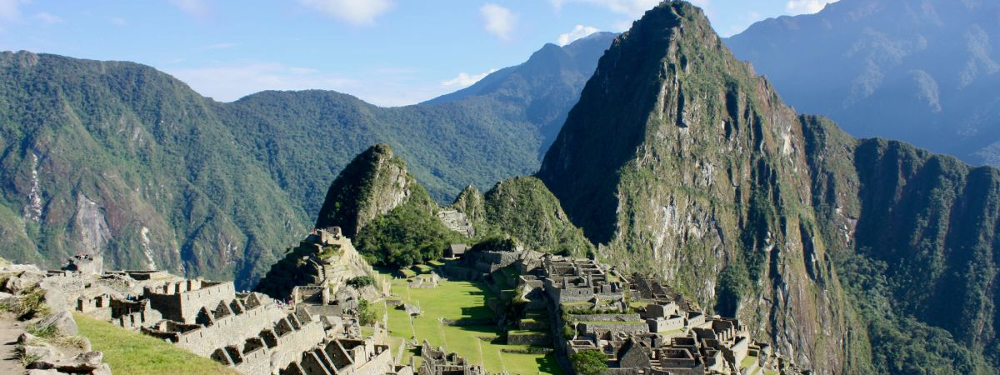

Machu Picchu é um sítio arqueológico localizado no Peru, reconhecido como uma das maravilhas do mundo moderno! O lugar é impressionante sob inúmeros aspectos e merece entrar na sua lista de destinos para ser desbravado ao menos uma vez na vida! Exalando uma energia incrível, é um museu ao ar livre e uma verdadeira aula de conhecimento!
O que é Machu Picchu
A “cidade perdida dos Incas”, ou Machu Picchu, que significa "velha montanha" em quéchua, língua nativa, foi uma das cidades do chamado "Império Inca". O lugar ainda tem boa parte de suas construções originais e permite aos visitantes desvendar um pouquinho de um povo que guardava um conhecimento muito avançado, especialmente para a época em que lá viveram. O sítio arqueológico está 2.450 metros acima do nível do mar, em uma localização que desperta interesse justamente por ser de difícil acesso.
Machu Picchu foi toda construída por blocos de pedras encaixadas, sendo que a maior parte delas tem entre 10 kg e 15 kg — mas algumas chegam a pesar 20 toneladas. O lugar tem cerca de 32 mil hectares e reúne em torno de 200 estruturas em pedra granítica, que incluem terraços agrícolas, templos, residências, paredes enormes e canais de irrigação.
As famílias que lá viviam tinham um conhecimento muito aprofundado sobre agricultura, astronomia, matemática e acústica. É fantástica a experiência de visitar as ruínas e perceber o encaixe perfeito das paredes construídas centenas de anos atrás. É quase impossível não se questionar como esse lugar tão cheio de estrutura, em um lugar tão exótico pode ter existido e sido construído de forma tão grandiosa, que até os dias atuais segue de pé!
Andar por Machu Picchu é conhecer a história, o modo de vida e se surpreender com o conhecimento admirável que incas possuíam. Um passeio imperdível, com diversos segredos!
- Leia as dicas de ingresso para Machu Picchu
- Reserve seu passeio a Macchu Picchu com ingresso pagando em reais
| HOTEL | NOTA | LINK |
|---|---|---|
| Inkaterra Machu Picchu Pueblo Hotel | 8.7 | Ver preços |
| Picos House | 8.7 | Ver preços |
| Amakonkay Machupicchu | 8.7 | Ver preços |
| Machu Picchu Land | 8.6 | Ver preços |
| Supertramp Hostel Machupicchu | 8.4 | Ver preços |
| Samananchis Machupicchu | 8.3 | Ver preços |
| Golden Sunrise Machupicchu | 8.2 | Ver preços |
| Hotel Ferré Machu Picchu | 8.2 | Ver preços |
| Mapi Gardens Machupicchu B&B | 8.1 | Ver preços |
| Hotel Machupicchu Inn | 7.6 | Ver preços |